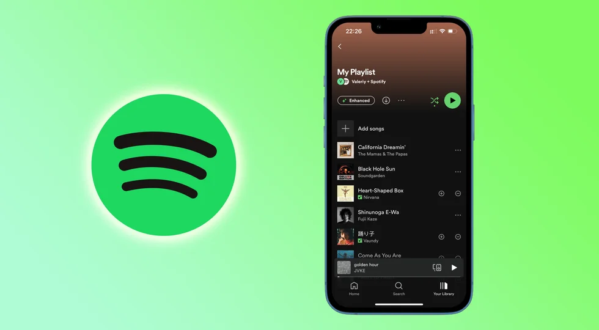
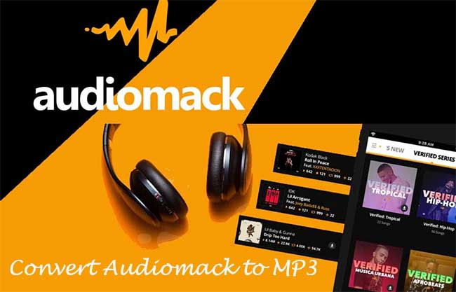

Here are some popular online music streaming platforms :
- spotify :
- Audiomack:
- Boomplay :

Spotify is a digital music, podcast, and video service that gives you access to millions of songs and other content from creators all over the world.
Basic functions such as playing music are totally free,but you can also choose to upgrade to Spotify Premium.
the online music streaming platform helps promote both local and international artiste from all over the world.
here is a video of one of our nigerian artiste representing us....

Audiomack is the GLOBAL streaming music app that lets you download and offline the hottest albums, songs, mixtapes and playlists.
Discover buzzing new songs ...
Millions of fans use Audiomack daily to discover the hottest trending music anywhere.
Upload your music and submit it for Trending consideration (completely free) to get the chance to be placed in front of a massive new audience.
Boomplay or Boomplay Music is an Africa-focused media streaming and download service.
Developed by Transsnet Music Limited, the platform was first launched in Nigeria in 2015 by TECNO Mobile.